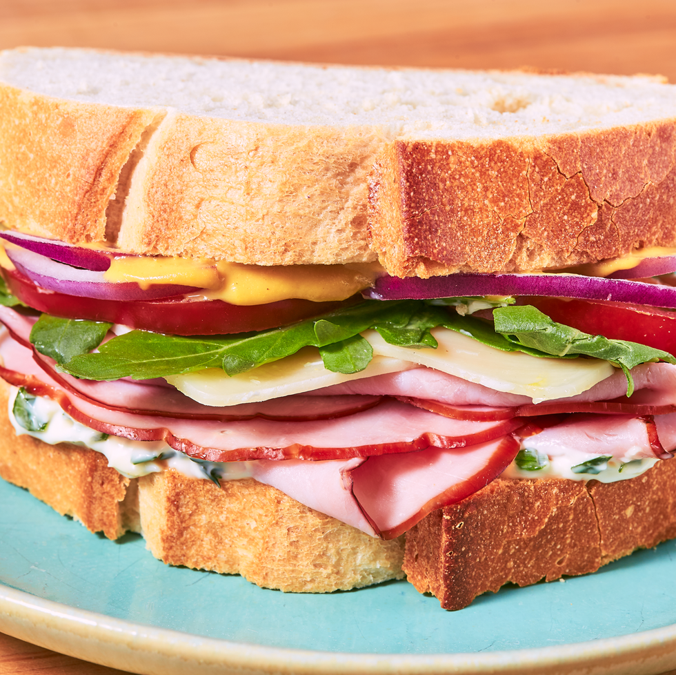

Ham Sandwich recipe

Description
You're probably thinking, "I don't need a ham sandwich recipe." Well, you clearly do, because you're here. This sandwich is worth following a recipe for. It will be the sandwich you crave for every lunch and every midnight snack
Ingredients for herb mayo
- 1 c. mayonnaise
- 2 tbsp. freshly chopped parsley
- 2 tsp. freshly chopped thyme
- 1 tbsp. extra-virgin olive oil
- 2 cloves garlic, minced
Ingredients for the sandwich
- 8 slices crusty bread, such as sourdough or ciabatta
- 1/2 c. herb mayo
- 1/4 c. Dijon mustard
- 12 slices deli ham
- 8 slices provolone
- 1 arugula
- 1 tomato, thinly sliced
- 1/2 red onion, thinly sliced
Steps
- STEP 1: In a medium bowl whisk together mayonnaise, parsley, thyme, oil, and garlic.
- STEP 2: Spread 2 tablespoons herb mayo on 4 slices of bread. Spread 1 tablespoon mustard on the other 4 slices of bread. Top each mayo slice of bread with 3 slices of ham, 2 slices of provolone, arugula, a couple slices of tomato, and red onion. Top with remaining bread slices, mustard side down.